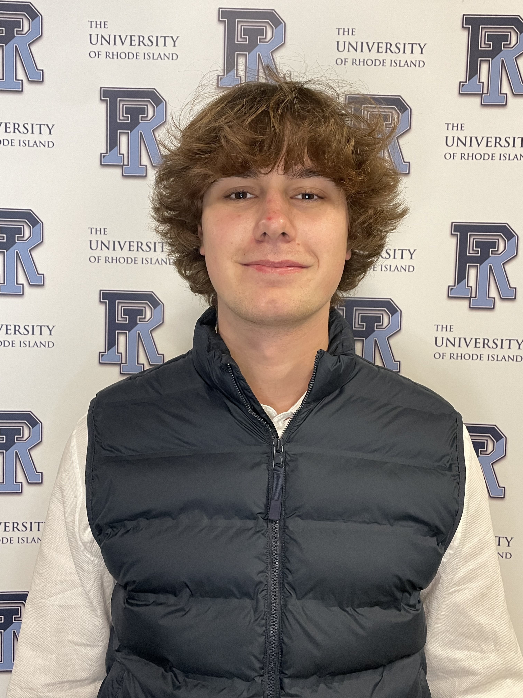

Thank you for visiting my personal website!
Here, you can explore my journey, including details about my education, personal projects, and work experience. As a dedicated computer engineering student, I am passionate about solving complex problems, collaborating with innovative teams, and contributing to meaningful projects. Feel free to look around and discover how my skills reflect my commitment to excellence and lifelong learning.
I am especially drawn to quantum computing and to AI systems that run from embedded devices to the cloud, including enterprise applications. I aspire to be a product engineer who connects the technology with the business side, turning ideas into working products. As an international student, I value diversity of thought, and I am looking for internships and research opportunities in these areas.
Do not hesitate to connect with me!
B.S. Computer Engineering
2023 - 2027
B.S. Computer Engineering
Minor in Math
Certificate in AI/ML in Engineering Applications
GPA: 4.0/4.0
Started: September 2023
Expected Graduation: May 2027
5 Scholarships
Merit & named awards
URI Presidential Scholarship
Subramaniam Family Scholarship
C & W Eckman Scholarship
Dr. & Mrs. E. Eddy Scholarship
Barbara A. Woods Memorial Scholarship
7 Key Courses
Software, circuits & hardware
Cloud Computing (AWS/Microsoft Azure)
Computer Networks
Machine Learning I & II (Python/Scikit-Learn/PyTorch)
Data Structures & Algorithms (C++)
Circuit Theory (MATLAB/LTSpice)
Digital Computer Design (FPGA/VHDL)
Computer Architecture (MIPS)
URI College of Engineering Jun 2026 - Present
Voice assistant that helps kids learn new languages through natural spoken conversation with friendly AI characters. Engineering a real-time voice pipeline in async Python, streaming bidirectional audio between device and OpenAI Realtime API. Delivered a working prototype on Raspberry Pi 5, now moving toward a lower-power device for everyday use.
Yale University Apr 2026
Quantum hackathon submission for the QuEra Challenge, exploring why a 1-qubit gate can be harder to implement than a 2-qubit gate. Built in Python and Jupyter notebooks with Bloqade, QuEra's quantum SDK.
Class Project Spring 2026
Python tooling for weather market analysis and trading automation on Kalshi.
URI College of Engineering Nov 2025 - Present
Retrieval-Augmented Generation (RAG) AI assistant automating responses to high-volume student inquiries. Built with Python, LangChain, and OpenAI APIs, with real-time web scraping pipelines using Firecrawl and BeautifulSoup4, containerized with Docker. Collaborating on a 4-person team.
HackHarvard '25 Oct 2025
JavaScript-based e-signature capture tool that tracks a user's finger via webcam for secure payment transactions. Built with React, Node.js, Google Gemini API, and Stripe. Deployed with Cloudflare. Delivered as a functional MVP within the 36-hour hackathon deadline.
QuLearnLabs May 2025 - Jul 2025
Hands-on projects from QuLearnLabs' quantum computing program, covering quantum mechanics for computing, post-quantum cryptography, and quantum-safe protocols. Designed and simulated quantum circuits with IBM Qiskit, explored classical-quantum hybrid approaches, and built a capstone implementing Grover's Algorithm with 4 qubits.
May 2026 - June 2026
Developed and evaluated domain-specific prompts to assess the performance of large language models (LLMs) in LTspice. Analyzed LLM-generated circuit designs and technical explanations for engineering accuracy, helping improve AI understanding of analog circuit design and simulation workflows.
February 2026 - May 2026
Volunteered to support QuLearnLabs' mission of expanding quantum literacy, sharing the company's programs with university students and helping them discover opportunities in quantum computing.
January 2026 - Present
Using Q-SYS to monitor classroom tech across campus on the Classroom Media Assistance Team. First point of contact for 150+ faculty members facing technical issues, providing on-site fixes or remote solutions. Handling hands-on hardware work from swapping projectors to replacing cable infrastructure. Working closely with a team of six to coordinate schedules and manage the ticketing system for all repairs.
October 2025 - Present
Founded URI's first student organization dedicated to quantum technology. Leading a student executive board and connecting with experts from industry and academia to invite guest speakers and expose students to real-world careers.
June 2025 - Present
Helping plan, coordinate, and execute a major tech event at URI. Working with the tech team to build the hacker platform, website, and registration tools. Collaborating with the sponsorship team to manage expenses, organize reimbursements, and support sponsor follow-ups. Networking with students, companies, and schools across the region. Attending hackathons like HackHarvard to gather insights for Hack@URI.
September 2024 - May 2025
Assisted in PCB design using Altium Designer for cryogenic and radiation testing. Performed manual soldering, ran simulations in LTSpice, and conducted electrical characterization by measuring Ids-Vds and Ids-Vgs curves. Developed a Python-based parameter optimization framework using PyTorch, NGSpice, and finite-difference gradients, with Git/GitHub version control and Weights & Biases experiment tracking.
September 2024 - May 2025
Provided personalized one-on-one tutoring sessions to students of various proficiency levels, improving their listening, reading, writing, and speaking skills in Spanish.
September 2024 - December 2024
Assisted the professor in grading assignments for over 80 students in macroeconomics. Collaborated with the teaching team to enhance the course structure and improve student engagement.
September 2024 - December 2024
Mentored 2 freshman engineering students, providing guidance on academic and extracurricular activities to support their transition and success in college.
Spanish (Native)
Valenciano (Native)
Catalan (Native)
English (Fluent/Bilingual)
German (Elementary)
Embedded & Cloud AI
Enterprise AI & Business
Product Engineering & Startups
Quantum Computing
AI & Data: Python, PyTorch, Scikit-Learn, LangChain, OpenAI APIs, RAG
Cloud & DevOps: AWS, Azure, Docker, Git/GitHub, Cloudflare
Embedded & Hardware: C++, VHDL/FPGA, Raspberry Pi, Altium Designer, LTspice, MATLAB
Full-Stack: React, Node.js, JavaScript, HTML/CSS
Product & Business: Rapid prototyping, MVP delivery, Excel, Power BI
Quantum: IBM Qiskit
AI-assisted Software Engineering for Quantum Computing and PQC [AISEQ]
Python Online Course
Microsoft Excel Online Course
Microsoft Power BI Online Course
Sports: Pickleball, padel, soccer, volleyball & more
Outdoors: Skiing, hiking & traveling to new places
On the side: Business & economy books, podcasts, investing and languages
Leadership: Founder & President of the Quantum Technologies Club; Computer Engineering Student Advisory Board (ABET Accreditation)
Honor Societies: Tau Beta Pi National Engineering Honor Society (Inducted Dec 2025); Phi Eta Sigma
Professional: IEEE; Society of Hispanic Professional Engineers (SHPE)
Clubs & Sports: URI Investment Club, Pickleball Club, Outing Club, Rifle Club; Intramural Soccer